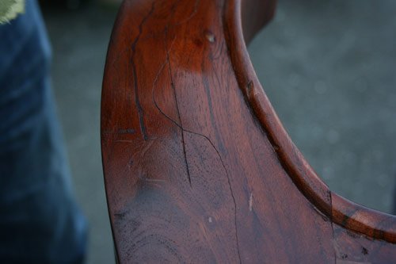

Remove scratches
Dents, scratches, or wholes? Here you'll learn how to hide or even get rid of small flaws on your item. Small is an understatement? Do not worry, with us you can even refurbish your furniture in case of deeper and bigger damages.
And here you'll find his ultimate tips on how to best tackle pressure and impact points, scratches, and holes in the wood.

In general, raw wood always requires fewer work steps than treated wood, because the following applies: if you chop wood, chips flew and where you sand away paint and varnish, you've to reproduce both as true to color as possible.
- To best handle dents, use water and warmth. The first three steps apply to untreated wood since in particular, it reacts very well to this gentle method. Moisten the dented area well.
- Then place a warm damp towel on it.
-
Iron over it with strong pressure and, at best, steam.
Note: Pressure raises and makes flat the wood particles. However, slight depressions can remain.
-
In case of minor scratches, you can achieve visually a lot with little
effort. A retouching pen in the right color is often sufficient.
Tip: As an alternative, you can use a water-based wood stain.
- If you choose a wood stain, dilute it to the desired shade and brush the appropriate area.
-
If the color matches the quirk, it is no longer noticeable.
Tip: If necessary, please use nitro spray paint to restore the scratched paint layer by smoothing the edges of color.
- The method of filling holes depends on their depth. In case of minor damage use hard wax, which despite its name doesn't become as firm as the wood paste. As a first step use a sharp object like scissors or any other available and poke out all remainings.
-
Clean the surface.
Tip: You'll achieve the best result by cleaning the surface with soft soap and then wiping it out with extraction naphtha.
-
Now putty the hole with a color-matching wax and smooth it with a hard wax plane.
Tip: You can copy the grains of the wood if you get the wax putty in two colors.
- After drying use a sanding block and sand the surface smoothly.
-
Then paint it again and sealed it with a layer of varnish.
Tip: You can use spray paint and varnish for both steps.Warning: Be careful when handling wood putty, as it contains solvents and can dissolve or react with existing colors.
For large cracks and holes use wood paste because it becomes very firm when it dries out. Pour the wood paste in the same way as the wax, but remember that it requires a longer drying period. Here, too, after you've sanded away the surface and everything has dried, you may paint it over with spray paint.
Good luck with DIY.
Document downloads: